Mastering the Art of French Cooking
Fri, 25 Nov 2011 23:00:39 +0000
Hace poquito os puse en antecedentes de mis vacaciones, así que os podéis imaginar de donde viene este libro. Fue una sorpresa que me encontré sobre la cama una tarde. Era “el libro”. El libro que por fortuna había conocido a través de la película que os recomendé el año pasado “Julie & Julia”. Me [...]
Hace poquito os puse en antecedentes de mis vacaciones, así que os podéis imaginar de donde viene este libro. Fue una sorpresa que me encontré sobre la cama una tarde. Era “el libro”. El libro que por fortuna había conocido a través de la película que os recomendé el año pasado “Julie & Julia”.
Me fijé en la etiqueta. La tienda la conocía, había estado varias veces en la calle Spring -una de las calles que más me gustan de NY- en la que hay de todo y mucha comida italiana… Os podéis imaginar que para todos los que nos gustan los trastos es un peligro. Como os dije no soy excesivamente gastona, así que normalmente sólo entro y veo, quizás Javi siempre me anima a comprar precisamente por eso, sabe como soy :)
En “Sur la table” empaquetan con mucho mimo todo, eso sí, previo pago de 8 dolares, que el mimo en este caso no lo regalan. El libro estaba envuelto en un papel marrón con un lazo morado y la tarjeta de la tienda. ¿Que será? Evidentemente era un libro y por lo que pude sonsacarle, estaba bastante claro que no se trataba de los dos tomos de El Quijote. Cómo véis no lo abrí hasta llegar a casa, en Madrid. Se lo prometí. Quería hacer las fotos con el paquete, el lazo y todo y aunque os las he puesto tarde, aquí las tenéis.
Así que ha llegado el momento de descubrir que se esconde dentro del paquete. Como podéis comprobar uno nunca sabe por dónde debe abrir los paquetes. Aquí me falló la intuición y lo abrí al revés…
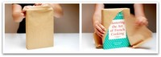
Pues señoras y señores ya tengo mi libro de Julia Child. Ahora espero ansiosa que algún día recuerde que en la película Julia llevaba siempre un collar de perlas. No va mucho con mi estilo pero bueno, si viene así de bien presentado el paquete, no voy a ser yo la que diga que no.
Me encanta mi libro. Me encantan los libros!
“Bon appètite”
PD: Prometo poneros pronto una ruta de tiendas de las de aquí, que nos quedan mucho más cerca y no cobran por envolver los regalos.
“Sur la table”
Dirección: 5 Spring Street, New York, NY
Web: http://www.surlatable.com/
Teléfono: (212) 966-3375
Tienda de menaje de cocina, libros, cuchillos, etc…
Tableta de chocolate con frutos secos…
Sun, 20 Nov 2011 14:00:00 +0000
Esta es vuestra última semana para participar en el *RETO “Todo con chocolate” donde estamos recopilando vuestras mejores recetas!! Seguro que cuando tengamos todo el recetario terminado, se os va a caer la baba de ver tantas recetas con chocolate juntas. Recuerda que puedes enviar tu receta hasta las 12 de la noche del Domingo [...]
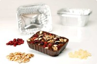
Esta es vuestra última semana para participar en el *RETO “Todo con chocolate” donde estamos recopilando vuestras mejores recetas!! Seguro que cuando tengamos todo el recetario terminado, se os va a caer la baba de ver tantas recetas con chocolate juntas.
Recuerda que puedes enviar tu receta hasta las 12 de la noche del Domingo 27 de Noviembre. Yo ya las estoy recopilando, para lanzar cuanto antes el libro gratuito y que todos os lo podáis descargar.
La receta de esta Tableta de chocolate con frutos secos, es simplemente facilísima y es otra forma de presentar el chocolate a vuestros amigos. Cuando alguien vaya a casa a tomar el café, ya podréis ponerle un trocito de chocolate “con cosas”. Una receta adaptada a la Thermomix del libro “Recetas básicas de Chocolate”. Una idea más.
Tableta de chocolate con frutos secos y frutas
Ingredientes para 1 tableta:
250gr de chocolate fondant
A vuestro gustos: almendras, nueces, avellanas, pasas, orejones, higos, frutos del bosque deshidratados, papaya deshidratada, arándanos, etc…
1 molde de 0´5 ó de 1 litro de albal si quieres una tableta más fina
Preparación:
1.- Pon el chocolate en el vaso, pon la tapa en posición “vaso cerrado”, y da unos golpes de turbo hasta que veas que el chocolate se ha quedado triturado.
2.- Para fundir el chocolate, programa 5 minutos, 50º, velocidad 1. Cuando veas que el chocolate está fundido y homogéneo, con la ayuda de una lengua o la espátula, pasa el chocolate al molde de aluminio.
3.- Pon los frutos secos y las frutas deshidratadas, enterradas en el chocolate. Deja enfriar. Listo
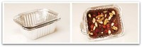
Nota: Puedes hacer estas tabletas de chocolate para regalar, envolviéndolas en papel de celofan, conservándolas en frío. Son diferentes y admiten todo tipo de rellenos (krispies, arroz inflado,turrón en trocitos, pasta de almendras, caramelos, etc…).
*Fuente: “Recetas básicas de chocolate” Editorial Grijalbo (Sortearemos 5 libros en el RETO)
Mi tabla de madera, ¡mi tesoro!
Tue, 15 Nov 2011 23:15:27 +0000
Estos días habéis sido muchos los que me habéis preguntado por mi tabla de cocina después de verla en la fotografía de la receta de la Empanada de salmón Noruego, por eso en esta sección de Útiles de cocina, os voy a contar que cosas uso, cuáles son las que me gustan, y hoy os [...]
 Estos días habéis sido muchos los que me habéis preguntado por mi tabla de cocina después de verla en la fotografía de la receta de la Empanada de salmón Noruego, por eso en esta sección de Útiles de cocina, os voy a contar que cosas uso, cuáles son las que me gustan, y hoy os cuento la historia de esta tabla.
Estos días habéis sido muchos los que me habéis preguntado por mi tabla de cocina después de verla en la fotografía de la receta de la Empanada de salmón Noruego, por eso en esta sección de Útiles de cocina, os voy a contar que cosas uso, cuáles son las que me gustan, y hoy os cuento la historia de esta tabla.
Va a ser interesante esta sección, porque si os gustan los útiles de cocina tanto como a mi, vamos a disfrutar. Soy un poco cotilla para esto, podéis mandarme fotos de las vuestras :)
Esta es mi tabla de cocina desde este verano. Corto fundamentalmente verduras. El pescado y la carne lo trabajo en otra superficie que tengo de plástico porque la madera es porosa y me da un poco de miedo eso de las “contaminaciones cruzadas“. Así que tablitas siempre limpias y el que quiera, puede sellar la de madera con algún tapaporos específico para que no absorba líquidos. Yo por el momento solo le echo aceite de vez en cuando para mimarla.
Este fue uno de mis caprichos neoyorquinos de este verano. Una mañana, al lado de Central Park me fui a Williams-Sonoma -en Columbus Circle- y paseando por la tienda vi la tabla, me encantó, pero me pareció una locura traérmela en el avión, así que no me la compré.
Me pareció diferente, primero porque era muy ancha -6,5cm- y a mi me gustan así. Era robusta, en unos colores no muy oscuros, con ese veteado y cuadrículas tan bonito, con huecos laterales para meter los dedos y cogerla con facilidad y estéticamente me parecen lo más. Las de “plástico” las tengo, pero no las dejo sobre la encimera, van al lavavajillas y de ahí al armario.
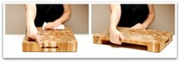
Pero una de las cosas que más me llamó la atención, fue el otro hueco que podéis ver en la foto. Es practiquísimo porque puedes poner una fuente o un plato grande, ir cortando tus verduras e ir echando el desecho o lo que cortes en el plato. Así siempre tienes la tabla libre. Nunca lo había visto en ninguna tabla y me pareció una gran idea. ¿A que es monísima? :)
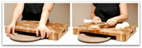El caso, es que me fui de la tienda sin la tabla y sin otras cosas que había visto. No iba a pasar todo el día cargada por la Gran Manzana y la tabla pesa un poco-mucho, no era plan. Si, mi gozo en un pozo, jejejeje.
Unos días después volvimos para comprar ya las cositas pequeñas que me habían gustado, pero estando en la tienda se me había olvidado la tabla por completo, fundamentalmente porque no la ví, ya no estaba y cuando me iba de nuevo fue él, el que me lo recordó. Mi marido -que es un solete- me dice “¿no te gustaba la tabla del otro día?”, a lo que respondí que si pero que no me cabía en la maleta, pesaba mucho e iba a ser un rollo llevarla. Y claro me dijo “compramos una maleta más grande” :)
Tuvieron que comprobar que en el almacén tenían más. Al principio nos sacaron otros modelos que no eran, pero por fin apareció la que me gustaba… y ahí estaba yo, saliendo de Columbus con mi tabla de madera, sonriente.
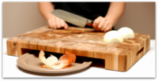
Tengo que confesar que para estas cosas soy un poco sibarita. No soy nada gastona, pero si me gusta mucho algo, me lo gasto -siempre que me lo pueda permitir-. En mi casa tengo sólo lo necesario, pero de calidad y bonitas, como mi tabla neoyorquina. Hay quien de los viajes se traen otras cosas, ya véis en que gasto yo mi sueldo de enfermera :)
Cómo se limpia la tabla de la cocina
Con agua y jabón, fregando bien. Luego enjuaga, pásale un paño limpio para secar o papel de cocina. También puedes frotarla antes de fregar con medio limón.
Hoy la casa se enciende: Premios “Bitácoras 2011″
Fri, 11 Nov 2011 15:08:10 +0000
Ya se han entregado los premios Bitácoras en “La casa encendida” en Madrid. Ha sido una tarde emocionante, donde he reído mucho con los ganadores, sus discursos… VelocidadCuchara ha quedado finalista en 3º puesto, en segundo puesto ha quedado Objetivo Cupcake y el ganador de esta edición 2011 ha sido Cocinillas… a ellos mi enhorabuena [...]

Ya se han entregado los premios Bitácoras en “La casa encendida” en Madrid. Ha sido una tarde emocionante, donde he reído mucho con los ganadores, sus discursos… VelocidadCuchara ha quedado finalista en 3º puesto, en segundo puesto ha quedado Objetivo Cupcake y el ganador de esta edición 2011 ha sido Cocinillas… a ellos mi enhorabuena y por supuesto a todos los ganadores del resto de categorías.
Para mi ha sido un placer poder estar este año en el meollo. Llegar, es un premio importante, estoy muy orgullosa y me he sentido muy arropada por todos los compañeros blogueros gastronómicos que han estado animando hasta el final y a los que desde aquí les digo que les aprecio y les quiero ;D
Gracias a: @derechupete, @cnriva, @ratamala, @pepacooks, @gastrogolfa, @mikeliturriaga, @webosfritos, @srwebos, @alefeldman, @Pintxo, @UnodedosRecetas, @celinacatering, @Mimundo_blog, @VickyOrti, @SandeeA, @AdriaCatedra, @Cucharonatras, @JuanWes, @MaiteMontes, @Delicietas, @ElenaCorreu, @Elecalde, @Chocolatisimo, @Cocinarpara2, @Konieva, @GuiaRepsol, @CocinillasYum, @ElTesogourmet, @Carmelo_cocina, @Boobadas, @espe180, @Annikiole, @anafuentesf, @Ifeelcook, @Nomedalaganas, @Nubkor, @Luisete, @inmadeharo, @Sheenatama, @Nacho_diaz, @PatrixDQV, @Pasean2, @Eladerezo, @Alma_cupcakes, @SusanaElguea, @Anaentreolivos, @Monsieurcocotte, @Comerycantar, @Simplemente_Bea, @rovase61, @Agoisfoto, @Espanaenlamesa, @pequesypapas, @Casal, @Hollycocina, @arantxamartin, @almudenaZapata… (espero no olvidarme de muchos) y por supuesto a todos los que habéis estado animando a través de “Cocinar con Thermomix“, sois la leche!!!!
Besos a todos y muchas GRACIAS!
Ro
Empanada de Salmón Noruego o “Kulibiak”
Tue, 08 Nov 2011 23:05:48 +0000
Siento la foto, pero ya nos hemos comido la mitad!!! No me gustaba nada el salmón hasta que hace como cosa de un mes tuve la oportunidad de ir a Noruega y probarlo in situ! El sabor era absolutamente delicioso, si bien es cierto que los noruegos cocinan muy poco el salmón, es más crudo [...]
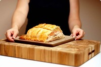
Siento la foto, pero ya nos hemos comido la mitad!!!
No me gustaba nada el salmón hasta que hace como cosa de un mes tuve la oportunidad de ir a Noruega y probarlo in situ! El sabor era absolutamente delicioso, si bien es cierto que los noruegos cocinan muy poco el salmón, es más crudo y me pareció suave, sin sabor graso, quizás por eso me gusta tanto el salmón en tartar y por supuesto me encanta el ahumado. Al final de tanto salmón creo que acabé con saturación de Omega3, ¿o era ya Omega4??? :)
¿Sabíais que el salmón ahumado que tomamos aquí, se ahuma precisamente en nuestro país?. Según he podido escuchar, el salmón ahumado en Noruega tiene un sabor más potente, diferente y al parecer no nos gusta tanto. También ellos especian diferente este pescado, usan mucho el eneldo y otras hierbas!
La mayoría de los salmones que compramos en nuestras pescaderías son de Noruega, de los fiordos, y casi todos son de “granja” o piscifactoria… pero el sabor es muy bueno y cada vez más similar al “salvaje”, de hecho en el Instituto Gastronómico de Stavanger, nos contaron que estaban mejorando muchísimo la calidad y el sabor y por ejemplo en una cata ciega de bacalao, ya ganaba el de granja al salvaje. De eso os hablaré otro día porque me parece muy interesante, pero si queréis saber más sobre este tema os dejo este post de “El Comidista” y el enlace a Norge (Consejo de Productos del Mar de Noruega).
La receta es laboriosa, pero si te gusta el salmón la vas a disfrutar. Esta es una receta Rusa que se usa para las fiestas, principalmente la Pascua y la Navidad. El nombre oficial es “Kulibiak“.
Empanada de Salmón Noruego
Ingredientes para 8 personas:
Para la masa:
360gr de harina de trigo
180gr de mantequilla
1 cucharadita de sal
90gr de agua fría
1 huevo batido para pintar la masa
Para el relleno:
25gr de aceite de oliva virgen extra
1 litro de agua
3 cucharadas de sal
150gr de arroz
3 huevos
250gr de chalotas peladas y enteras
50gr de mantequilla (yo prefiero sofreir con aceite)
250gr de champiñones limpios y enteros
900gr de salmón Noruego en un sólo filete, sin piel ni espinas
Pimienta negra al gusto
3 ramitas de Eneldo fresco picado (opcional)
Para la salsa:
200gr de vino blanco
400gr de nata líquida
1 cucharadita de sal
1/4 de cucharadita de pimienta negra
4 ramitas de perejil picado (sólo las hojas)
4 ramitas de eneldo picado
30gr de zumo de limón
Utensilios:
Papel de hornear
Rodillo de cocina
Pincel
Preparación:
Para la masa:
1.- Pon en el vaso la harina, la mantequilla y la sal y programa 15 segundos en velocidad 6.
2.- Añade el agua y programa 15 segundos en velocidad 6. Retira la masa a un bol y tápalo con film transparente. Introduce en la nevera 30 minutos.

Para el relleno:
3.- Sin lavar el vaso, vierte el aceite y el agua con la sal. Pon en cestillo en su posición y agrega el arroz. Coloca los huevos en el varoma y sitúa este sobre la tapadera y programa 17 minutos, Varoma, velocidad 1.
4.- Terminado el tiempo, retira el varoma y deja que los huevos enfrien y con la ayuda de la espátula, retira el cestillo con el arroz y vuelca este sobre una fuente para que se vaya enfriando.
5.- Con el vaso vacío (puedes tirar el agua de cocción del arroz o guardarlo para aprovecharlo), vierte las chalotas y trocéalas 3 segundos en velocidad 5. Baja los restos de las paredes con la ayuda de la espátula y añade la mantequilla o en su lugar el aceite de oliva. Sofríe 8 minutos, Varoma, Velocidad cuchara.
- Yo lo hice con la mantequilla y creo que la próxima vez sofreiré con oliva, el sabor me gusta mucho más.
6.- Añade a lo anterior los champiñones enteros y trocea 4 segundos en velocidad 4. Agrega una pizca de sal y saltea 5 minutos, temperatura Varoma, giro a la izquierda y velocidad cuchara. Retira y reserva, deja que enfríe.
7.- Pela los huevos, separa las claras de las yemas. Sin lavar el vaso pon las claras y trocéalas 1 segundo en velocidad 4, reserva. Haz lo mismo con las yemas y reserva aparte.
8.- Precalienta el horno a 200ºC
Para la salsa:
1.- Con el vaso limpio, ponel vino blanco y sin poner el cubilete vamos a evaporar el alcohol durante 5 minutos, Varoma y velocidad 1.
2.- Agrega la nata, la sal y la pimienta y programa 4 minutos, 100ºC y velocidad 3.
3.- Añade las hojas de perejil picado, el eneldo y el zumo de limón y mezcla 15 segundos en velocidad 5. Listo
- Puedes servir la salsa junto a la empanada caliente. Es una salsa bastante líquida. Yo no le he puesto eneldo porque no me gusta :)
Montaje de la empanada
1.- Divide la masa en dos partes, una será un poquitín más grande que la otra. La más pequeña la usaremos para hacer la base y la otra para la tapa y los adornos.
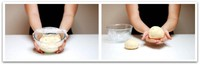
2.- Sobre papel de hornear, estira la masa y una vez tengas hecho un rectángulo de aproximadamente 35cmX25cm, pásala a tu bandeja de horno. Ten en cuenta que una vez que coloques el pescado, la masa debe poder sobresalir por los lados para sellarla.
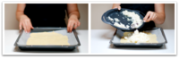
3.-Pon el arroz como base sobre la masa (deberá estar frio), dejando unos centímetro libres para cerrar luego la empanada como te he explicado antes. Después añade el sofrito de las chalotas y los champiñones, coloca con cuidado tu lomo de salmón noruego de 900gr!!!!
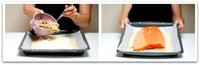
4.- Ahora ya agregamos sobre el salmón un poco de sal, la yema de huevo y por último las claras troceadas.
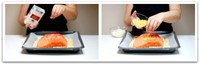
5.- Ya tenemos el relleno listo. Toca volver a coger papel de horno y estirar la masa para poner la “tapa” a nuestra empanada. Normalmente la tapa suele prepararse con el trozo de masa más pequeño, pero en este caso es al revés, ya que como se puede ver en las fotos, vamos a cubrir el pescado y además vamos a cubrir hasta las esquinas de la masa base! Lo que he hecho para que sea fácil de tapar, es estirar la masa con el rodillo sobre el papel de hornear y transferir este directamente a la empanada, ya que es una masa fina difícil de manejar sin que se rompa. Así queda perfecta, como lo harías si estuvieras usando un hojaldre comprado.
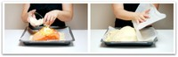
6.- Recorta los excesos de la masa con la ayuda de un cuchillo y resérvalos para hacer los adornos de la empanada. Sella con el dedo todo el borde de la empanada como ves en la imagen. Es muy fácil.
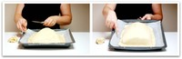
7.- Ya solo queda hacer los adornos, abrir “dos chimeneas”, para que salga el vapor al cocerse en el horno y pintar toda la empanada con huevo batido.
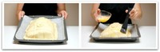
8.- Hornéa a 200º unos 30 minutos. Yo lo he horneado un poco más para que se me quedara el exterior más tostado,pero el pescado se me ha hecho demasiado, a mi me gusta menos hecho. Y este es el resultado:

Nota: puedes usar masa de hojaldre comprada si no quieres ponerte a hacer la masa. Necesitarás 2 hojas para esta empanada Rusa. Como siempre en estos casos, puedes hacer las presentaciones de la empanada en raciones individuales, aunque la receta típica es como ves en las fotos. Que la disfrutes!
Fuente: del libro “De viaje con Thermomix” página 118-Rusia
Bizcocho de chocolate al vino tinto
Wed, 23 Nov 2011 23:00:49 +0000
Esta vez la introducción a la receta es breve. ¿Por qué? Bueno porque creo que este bizcocho hay que probarlo cuanto antes, sin perder demasiado tiempo y porque además acabo de llegar de viaje y estoy muerta :) Así que voy al grano que aún tengo que poner la lavadora… La receta está “tirada” y [...]
Esta vez la introducción a la receta es breve. ¿Por qué? Bueno porque creo que este bizcocho hay que probarlo cuanto antes, sin perder demasiado tiempo y porque además acabo de llegar de viaje y estoy muerta :) Así que voy al grano que aún tengo que poner la lavadora…
La receta está “tirada” y será un buen aporte calórico para los desayunos de este casi invierno que tenemos encima, en menos de 4 minutos tienes la masa lista y ya solo queda hornear! Como me gusta hacer recetillas fáciles que te dejan luego tiempo para otras cosasss.
Muaccc
Bizcocho de chocolate al vino tinto
Ingredientes:
4 huevos
200gr de azúcar
200gr de mantequilla a temperatura ambiente
200gr de Nesquick
200gr de harina
110gr de vino tinto
1 sobre de levadura química
Azúcar glass para decorar
Preparación:
1.- Pon en el vaso los huevos y el azúcar y bate 2 minutos en velocidad 2.
2.- Agrega la mantequilla y mezcla 1 minuto, 37º, velocidad 3.
3.- Incorpora el nesquick junto con el vino y mezcla 10 segundos en velocidad 3.
4.- Añade la harina con la levadura, mezcla de nuevo 10 segundos en velocidad 3, termina de envolver con la espátula y vierte sobre un molde engrasado o forrado con papel sulfurizado de unos 24cm de diámetro.
5.- Hornéa a 180ºC -con el horno precalentado-, calor arriba y abajo durante unos 40-45 minutos. Cuando esté frio, desmolda y espolvorea con azúcar glass.
Nota: el bizcocho está buenísimooooo, es rico, rico… pero tuve un problema, a mi me desmoldó mal y eso que lo dejé enfriar, no sé porqué fue pero como estrenaba molde, por ahora le echaré la culpa a eso. Cómo seguro que muchos de vosotros lo váis a probar, no os olvidéis dejarme vuestras experiencias en los comentarios. Para evitar problemas, podéis forrar vuestro molde con papel vegetal. Ya me contaréis.
Fuente: Receta de Gloria Fernández Rodelgo
Tapenade
Thu, 17 Nov 2011 23:00:27 +0000
Ha llegado el momento de destapar el gran engaño de VelocidadCuchara. Las 600 recetas que hay en este blog no las ha hecho Rosa, las he hecho yo ;-) Vale, es mentira. Esta es la primera y espero que no sea la última. Pasar de tocar las tripas del blog a colgarse el delantal negro [...]

Ha llegado el momento de destapar el gran engaño de VelocidadCuchara. Las 600 recetas que hay en este blog no las ha hecho Rosa, las he hecho yo ;-)
Vale, es mentira. Esta es la primera y espero que no sea la última. Pasar de tocar las tripas del blog a colgarse el delantal negro es toda una responsabilidad pero seguro que el alumno termina desbancando a la maestra (Tiembla @rosaarda). Aviso, mis recetas son fáciles, rápidas y sobre todo están pensadas para aquellos que no os podéis liar más de 20 minutos en la cocina.
¡Ah! Veréis que muchas cosas son para picar los fines de semana o platos para cenas para después del trabajo, cuando uno llega hecho polvo a casa y no ve otra salida que poner en marcha este nuestro querido robot. Es lo que hay, el blog también refleja la dura vida del asalariado. Espero vuestros comentarios y que sigáis mis recetas en Hoy cocina él o en Twitter, en @eltupperdecasal.
Tapenade
Ingredientes:
330gr de aceitunas negras deshuesadas
50gr de atún al natural de lata
3 dientes de ajo
8 filetes de anchoa en aceite de oliva
1 cucharada de alcaparras
1 cucharadita de tomillo
10gr de aceite de oliva virgen extra
Pimienta molida al gusto
Preparación:
1.- Pesa los 10 gr de aceite y reserva.
2.- Pon todos los ingredientes en el vaso -excepto el aceite de oliva virgen extra- y tritura 3 minutos en velocidad progresiva 5-8. Baja lo que haya quedado en las paredes con la ayuda de la espátula.
3.- Pon la Thermomix en velocidad 4, sin tiempo y con el cubilete puesto, añade el aceite para que vaya cayendo lentamente como si estuvieses haciendo una mahonesa. Listo
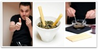
Nota: La mezcla gris o negra que resulta después de triturar los ingredientes es, en efecto, bastante asquerosa. No os dejéis llevar por las apariencias. Acompaña el Tapenade de unos palitos de pan o unas tostas y… cierra los ojos. Comprobarás que muchas veces comemos solo con la vista.
Fuente: Vorwerk
Potaje de vigilia
Mon, 14 Nov 2011 01:32:55 +0000
Ya se ha pasado el fin de semana y toca volver a la normalidad!!!. Esta semana pasada hizo algo de frio, así que pensé que no estaría nada mal preparar un potaje, y me ha salido este potaje de vigilia tan típico de la Semana Santa. Si no os gusta el pescado podéis ponerle carne, [...]

Ya se ha pasado el fin de semana y toca volver a la normalidad!!!. Esta semana pasada hizo algo de frio, así que pensé que no estaría nada mal preparar un potaje, y me ha salido este potaje de vigilia tan típico de la Semana Santa. Si no os gusta el pescado podéis ponerle carne, seguiría siendo un potaje, pero ya no os valdría como plato tradicional de vigilia.
¿Cuándo se toma? pues según los católicos practicantes, el viernes de cuaresma. Yo de estas cosas de las tradiciones sé poco y nunca las cumplo, así que no os digo nada más porque seguro que meto la pata!
Si estuviera mi abuela, me daba un capón!!! ya sabéis que las abuelas estas cosas las llevaban a rajatabla :D
Potaje de vigilia
Ingredientes para 6 personas:
200gr de cebolla en cuartos
2 dientes de ajo
100gr de aceite de oliva virgen extra
1 cucharadita de pimentón de la Vera
Unas hebras de azafrán
400gr de garbanzos cocidos y escurridos
700gr de agua
250gr de acelgas descongeladas y escurridas o espinacas
1 hoja de laurel
250gr de bacalao desalado y desmigado
sal
2 huevos duros
Preparación:
1.- Trocea la cebolla, con los ajos y el aceite programando 5 segundos en velocidad 4.
2.- Sofríe 8 minutos, Varoma, velocidad cuchara.
3.- Añade el pimentón por los lados del vaso, 80gr de garbanzos cocidos, y 10gr de agua, y tritura 15 segundos en velocidad 6.
4.- Incorpora el agua restante, las espinacas o acelgas y el laurel, cocina 5 minutos, 100º, giro a la izquierda y velocidad cuchara.
5.- Agrega el resto de los garbanzos cocidos y las migas de bacalao y programa 8 minutos, 100º, giro a la izquierda y velocidad cuchara. Listo
Nota: Comprueba el punto de sal que dependerá de lo salado que esté el bacalao. Añade los huevos duros cortados en rodajas para decorar y cuécelos el tiempo adecuado, no como yo, que me olvidé de ellos y se cocieron de más!
Fuente: “Nuestra cocina regional: Canarias, Castilla-La Mancha, Castilla y León y Madrid” Thermomix.
Madrid: “Mamá Framboise” pastelería francesa
Wed, 09 Nov 2011 15:02:35 +0000
Lo bueno que tiene Madrid, es que nunca lo conoces, que puedes pasear por sus calles mil veces y cada vez que pasas descubres algo nuevo y hoy os presento uno de esos sitios que “Deliciosa Miranda“ y yo descubrimos un día paseando por casualidad. Íbamos dirección a la tienda de Caprile y nos llamó [...]
Lo bueno que tiene Madrid, es que nunca lo conoces, que puedes pasear por sus calles mil veces y cada vez que pasas descubres algo nuevo y hoy os presento uno de esos sitios que “Deliciosa Miranda“ y yo descubrimos un día paseando por casualidad.
Íbamos dirección a la tienda de Caprile y nos llamó la atención unos enormes ventanales de madera, un toldo que nos quitaba el sol en color frambuesa… cuando miramos para el interior solo pudimos ver un local lleno, muy Francés, muy blanco… precioso. Quedamos en volver más adelante y volvimos.

Sin darnos cuenta, habíamos descubierto la recién estrenada pastelería “Mama Framboise”, la primera boulangerie/pâtisserie francesa de Madrid, que tuvo tanto éxito en cuanto abrió sus puertas, que tuvo que cerrar para volver a redimensionarse porque vendían todo lo que producían antes de acabarse el día. Un mes más tarde habían ampliado el número de pasteleros para acoger la demanda y actualmente están pensando en ampliar.
Toda la bollería se hace en el obrador de la tienda y todo es artesano, natural y delicioso. Bollería francesa, croissants absolutamente recomendables -vamos, que lo twiteamos y todo :)-, bizcochos, mini tartas para tomar o para llevar, galletas, panes, quiches, ensaladas, sandwiches. Y para beber un delicioso Capucchino, chocolate a la taza, batidos de frutas, vinos, etc…
Muebles auténticos, comprados en Francia en diferentes “rastrillos”, decapados de verdad, usados y con mucho encanto. Papel pintado en las paredes que se mezclan con piedra, ventanas de madera con grandes cristales que bañan de luz el interior, mesas compartidas, sillas de mil estilos, todo muy acogedor. Parece sacado de una película, en cualquier momento se puede sentar “Amélie” a tu lado :)
Sin duda un sitio recomendable para repetir y repetir! Ahora tengo que llevar a Javi, para que de vez en cuando me traiga a casa estas delicias!!!
Pastelería-Tetería: Mamá Framboise
Web: http://mamaframboise.com/
Dirección: C/Fernando VI nº23, 28004 Madrid, (Barrio de Justicia, Metro: Alonso Martinez)
Teléfono: 913914364
Recomendamos: Todo :)
Precios: muy buenos en relación con la calidad, esta es la carta. Un croissant de los de verdad!!! 1,15€. Tartaletas individuales 2,94€, Capucchino/ Chocolate a la taza 2€.
Quesada pasiega
Mon, 07 Nov 2011 05:00:32 +0000
Creo que es el frio lo que me hace tener tantas ganas de dulce. Eso y todo lo que veo por los nuevos blogs de cocina que se van abriendo cada día. Sin duda poner recetas dulces siempre es un éxito en cualquier blog. No sé que tienen los postres y la repostería, pero es [...]
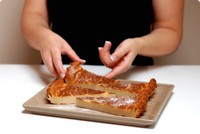
Creo que es el frio lo que me hace tener tantas ganas de dulce. Eso y todo lo que veo por los nuevos blogs de cocina que se van abriendo cada día. Sin duda poner recetas dulces siempre es un éxito en cualquier blog. No sé que tienen los postres y la repostería, pero es cierto que atraen muchísimo y, esta vez, tampoco me he podido resistir.
Elena es cántabra aunque vive en Madrid y hace relativamente poco se ha aventurado en un proyecto, su blog gastronómico: “Mis Thermorecetas“. Para el estreno eligió uno de los postres más típicos de su tierra, la “Quesada pasiega“, y creo que no es un mal estreno -os lo digo porque como véis yo ya la he probado :)-, la receta está deliciosa… Yo desde aquí solo puedo desearle muchísima suerte!!!!
Un beso grande
Quesada pasiega
Ingredientes para 8-10 personas:
250gr de queso de Burgos
500gr de leche entera
2 huevos
270gr de azúcar
la ralladura de un limón
1 cucharadita de canela molida
100gr de mantequilla y un poco más para engrasar el molde
150gr de harina de repostería
Preparación:
1.-Precalienta el horno a 180º. Engrasa un molde desmoldable con mantequilla o una fuente redonda (como véis en la foto más abajo).
2.- Pon en el vaso el queso y tritura 10 segundos en velocidad 5.
3.- Agrega la leche, huevos, azúcar, la ralladura de limón y la canela, y mezcla 1 minuto en velocidad 6.
4.- Incorpora la mantequilla a temperatura ambiente o derretida y mezcla 15 segundos en velocidad 4.
5.- Añade la harina y programa 20 segundos en velocidad 6.
6.- Ya puedes verter la mezcla en el molde engrasado y hornear durante 1 hora a 180ºC (dependerá del horno y del recipiente donde los hagas) ó hasta que esté cuajada. Deja enfriar, guarda en la nevera. Listo
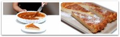
Nota: para saber que una masa está cuajada, además de ver que cuando mueves el molde el contenido está denso y no fluctúa, puedes probar pinchando. Yo siempre uso una brocheta que tengo guardada precisamente para esto, es muy simple, si al pinchar la masa con la brocheta, esta sale limpia, es que la masa está cuajada, si sale húmeda es que deberás poner unos minutos más de horneado. En mi horno con 1 hora fue suficiente. Deja enfriar y ya verás que rica está.